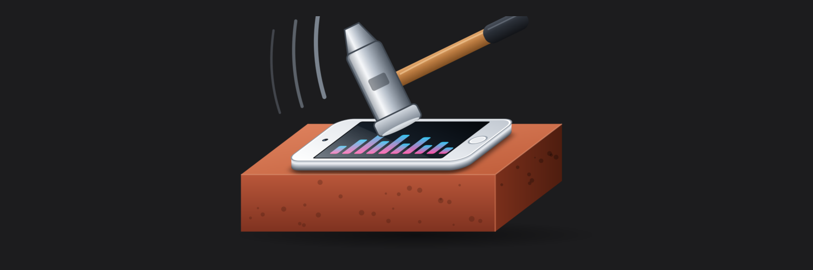

AmpEQ
Real headphone gain, a system-wide 12-band EQ and 8,853 headphone corrections for the iPod touch 7.
Features
- Gain - the iPod's own headphone amp past Apple's limit, no digital boost. 0.50 dB steps, 0.001-0.003 % distortion, clean to +11.0 dB.
- 12-band EQ with live curve, presets and AutoEq / Equalizer APO import
- Headphone database - 8,853 AutoEq corrections
- Clip meter + Prevent clipping
- Plugins - DRX Dynamics, gxFeed, Crossfeed, Sound field, Pitch 432, Convolution, Balance
- Hearing - separate left / right ear level and EQ (Accessibility)
- Volume steps - 16 to 100, optional status-bar number
Compatibility
- iPod touch 7 (iPod9,1) only
- iOS 15.0 - 15.8.8 (tested 15.8.6)
- Any rootless jailbreak: Dopamine or palera1n (rootless)
by devthedev